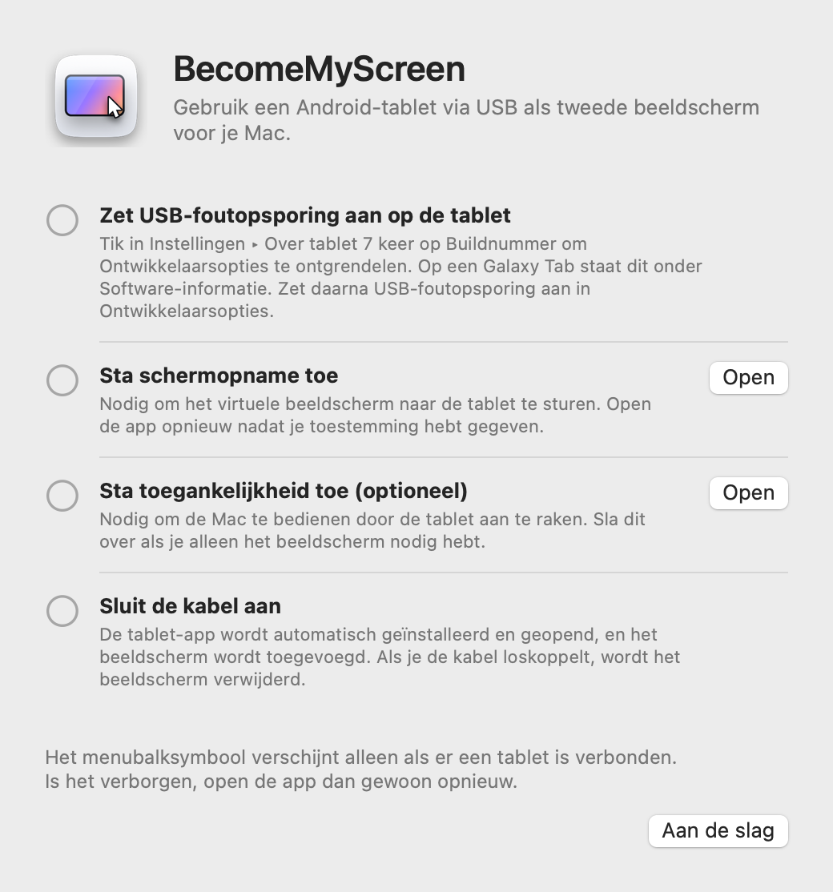
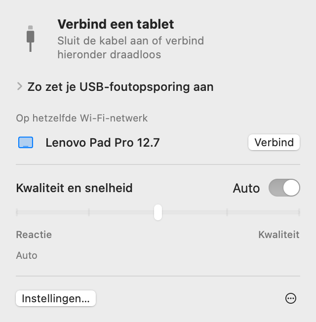
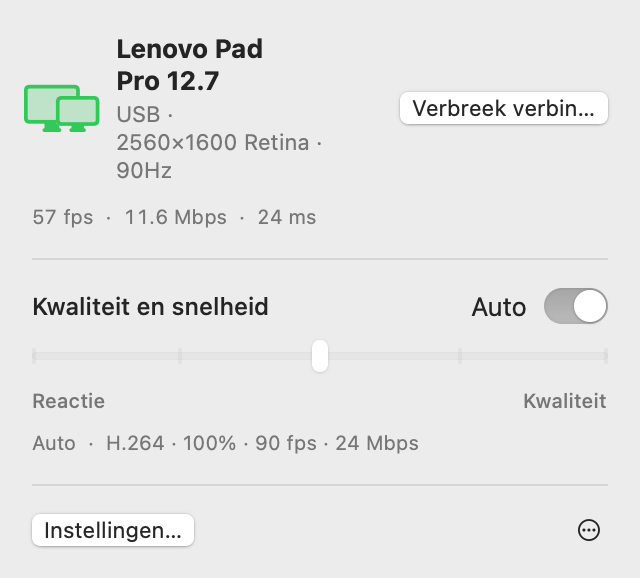
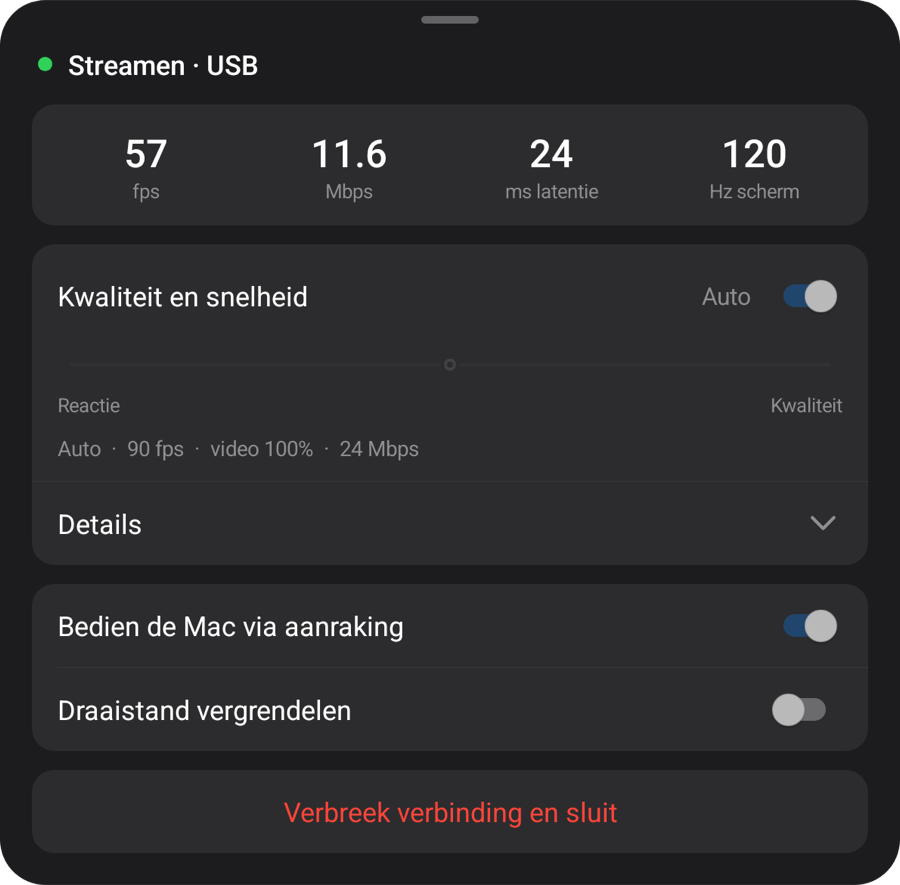
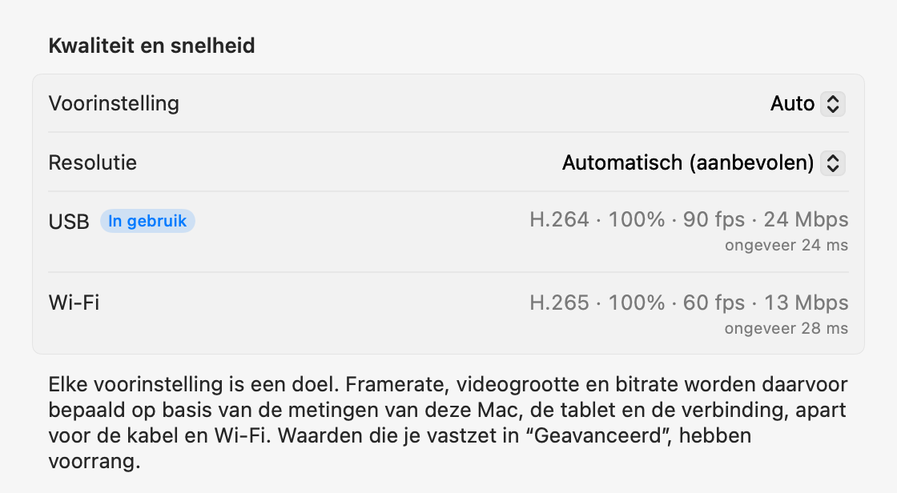

macOS + Windows
Je tablet.
Je computerscherm.
Gebruik je Android-tablet als tweede scherm voor Mac of Windows. Sluit hem aan via USB om de tablet-app automatisch te installeren en openen.
Open het zip-bestand, zet de app in de map Apps en open hem. Zie Instellen voor de eerste verbinding.
Open deze pagina op je computer om de Mac- of Windows-app te downloaden.

1.1.0
Windows
Nu voor Windows 11. Native apps voor Intel/AMD x64 en ARM64 in één download.

Start het installatieprogramma, sluit je tablet aan en sta USB-foutopsporing toe. De video-engine wordt bij de eerste start gedownload.
De metingen hieronder zijn gedaan op een Mac.
Instellen
Je stelt alles maar één keer in. Daarna wordt het beeldscherm toegevoegd zodra je de kabel aansluit, en op hetzelfde Wi‑Fi-netwerk maakt de tablet zonder kabel verbinding.
-
Installeer de Mac-app
Open het gedownloade zip-bestand, zet BecomeMyScreen in de map Apps en open de app. Sta schermopname toe en open de app daarna nog een keer.
-
Zet USB-foutopsporing aan op de tablet
Tik in Instellingen › Over tablet zeven keer op Buildnummer om Ontwikkelaarsopties te ontgrendelen. Op een Galaxy Tab staat dit onder Software-informatie. Zet daarna USB-foutopsporing aan in Ontwikkelaarsopties.
-
Sluit de kabel aan
Als de tablet vraagt of USB-foutopsporing mag worden toegestaan, vink je “Altijd toestaan vanaf deze computer” aan en tik je op “Toestaan”. De Mac installeert en opent de tablet-app en voegt daarna het beeldscherm toe. Je hoeft geen aparte tablet-app te downloaden.

Snelheid
De tijd vanaf het moment dat de Mac het scherm vastlegt tot de tablet het weergeeft. Gemeten met een Lenovo Pad Pro 12.7 en een Mac met M4 Pro.
| Videogrootte | 60 fps | 120 fps |
|---|---|---|
| 100%2560×1600 | 20 ms | 24 ms |
| 75%1920×1200 | 14 ms | 19 ms |
| 50%1280×800 | 11 ms | 16 ms |
De hardware-encoder in Apple silicon comprimeert het scherm naar H.264 en stuurt het via USB, en de hardwaredecoder van de tablet geeft elk frame weer zodra het binnenkomt. Bij de eerste verbinding meet Auto hoeveel de decoder aankan en kiest de hoogste framerate waarbij hij niet achterloopt. Op deze tablet werd dat 90 fps.
Zo is gemeten: na correctie voor het verschil tussen de klokken van beide apparaten hebben we de tijd gemeten tussen het vastleggen van een frame op de Mac en het weergeven van datzelfde frame op de tablet.
Draadloos
Een tablet die eenmaal via USB is verbonden, werkt ook draadloos op hetzelfde Wi‑Fi-netwerk. Koppel je tijdens het werken de kabel los, dan gaat het scherm verder via Wi‑Fi.
- Verbinden
- Open de app op de tablet en hij verschijnt in de lijst “Op hetzelfde Wi‑Fi-netwerk” in de menubalk van de Mac. Klik op “Verbind” en het scherm verschijnt.
- Loskoppelen
- Binnen een seconde schakelt het over naar Wi‑Fi. Het virtuele beeldscherm en de indeling van je vensters blijven zoals ze zijn, en als je de kabel weer aansluit, gaat het terug naar USB.
- Beveiliging
- De sleutel voor draadloze verbindingen wordt alleen via de USB-kabel uitgewisseld. Er wordt pas verbinding gemaakt als de sleutel klopt, en scherm en invoer worden volledig versleuteld met AES-256-GCM.
- Adaptief tempo
- De tablet bevestigt elk frame dat hij ontvangt, en de Mac slaat zoveel frames over als hij achterloopt en past de bitrate aan. Ook als Wi‑Fi even trager wordt, loopt de vertraging niet op.

| Verbinding | Latentie | Opmerkingen |
|---|---|---|
| USB | Ongeveer 20–25 ms | De maximale framerate van de tablet |
| Wi‑Fi 5 GHz | 40–55 ms | 60 fps; de bitrate stijgt automatisch tot de kwaliteitsinstelling |
| Wi‑Fi 2.4 GHz | 40–65 ms | De latentie schiet soms boven de 100 ms, wat als haperen kan overkomen |
Gemeten met een Lenovo Pad Pro 12.7 op 2560×1600 met voortdurend veranderende inhoud. Als de tablet op 2,4 GHz-Wi‑Fi zit, stelt de app voor om over te schakelen naar 5 GHz.
Kwaliteit en reactie
Kies een van de vijf stappen of laat het op Auto staan. Wijzig het via de menubalk van de Mac of via het tabletmenu, en beide kanten veranderen mee.
| Voorinstelling | Framerate | Videogrootte | Bitrate |
|---|---|---|---|
| Auto | 90 fps | 100% | 24 Mbps |
| 1Snelste reactie | 120 fps | 50% | 8 Mbps |
| 2Snelle reactie | 120 fps | 75% | 14 Mbps |
| 3Gebalanceerd | 90 fps | 100% | 24 Mbps |
| 4Hoge kwaliteit | 90 fps | 100% | 33 Mbps |
| 5Beste kwaliteit | 60 fps | 100% | 39 Mbps |
Gemeten met een Lenovo Pad Pro 12.7 (2560×1600, 120 Hz), via USB aangesloten op een Mac met M4 Pro. Elke voorinstelling is een doel: op een andere Mac of tablet, en via Wi‑Fi, worden de waarden opnieuw bepaald op basis van wat daar is gemeten. Auto is hetzelfde als Gebalanceerd.
De videogrootte staat los van de resolutie die de Mac ziet. Een kleinere video vult nog steeds het tabletscherm, en verlicht de decoder en verlaagt de latentie navenant.
Bij de eerste verbinding meet de app in ongeveer 10 seconden de kabel, de video-encoder van de Mac en de decoder van de tablet in elk van zijn modi; de eerste keer via Wi‑Fi meet de app het netwerk. Elke voorinstelling wordt afgestemd op deze waarden, apart voor de kabel en Wi‑Fi, en in de instellingen kun je onder “Geavanceerd” elke waarde per verbinding vastzetten. Als de kabel traag is, krijg je het advies hem te vervangen.



Aanraking
Raak de tablet aan en de Mac ontvangt dat als muisinvoer. Dit werkt zodra je toegankelijkheid toestaat op de Mac.
| Op de tablet | Op de Mac |
|---|---|
| Tikken | Klikken |
| Slepen | Slepen |
| Slepen met twee vingers | Scrollen |
| Tikken met twee vingers | Rechtsklikken |
| Tikken met drie vingers | Opent het tabletmenu |
| Tekenen met een pen | Komt op de Mac binnen als tekentabletinvoer, met druk en kanteling |
| Pen of muis boven het scherm houden | Beweegt de aanwijzer. Raak aan met de penknop ingedrukt om te rechtsklikken |
Een aanwijzer die teruggaat naar waar hij was
Als je de tablet aanraakt, gaat de aanwijzer van de Mac naar die plek. Beweeg je daarna de muis een beetje, dan gaat de aanwijzer terug naar waar hij vóór de aanraking was. Zo hoef je hem niet terug te slepen naar waar je mee bezig was op het hoofdbeeldscherm. Je kunt dit uitzetten in Instellingen.
Details
- Menubalksymbool
-
Het is alleen zichtbaar als er een tablet is verbonden. Is het verborgen, open de app dan opnieuw en het verschijnt even met het paneel geopend.
- Wachten
- Voorbereiden
- In gebruik
- Actie vereist
- De tablet-app openen
- Als de tablet-app niet actief is wanneer je de kabel aansluit, opent de Mac hem en activeert hij het scherm als dat uit staat. Het vergrendelscherm wordt nooit omzeild.
- Updates
- De Mac-app zoekt naar nieuwe versies en werkt zichzelf bij wanneer jij dat wilt. Brengt hij een nieuwere tablet-app mee, dan wordt de tablet via de kabel bijgewerkt voordat het beeldscherm start.
- Staand
- Draai de tablet naar staand en het virtuele beeldscherm wordt ook staand opnieuw aangemaakt.
- Verversingssnelheid en schermtime-out
- Tijdens het streamen wordt de verversingssnelheid van de tablet vastgehouden zodat die niet naar 60 Hz zakt, en het scherm gaat niet uit.
- Kabelcontrole
- Als USB verbinding maakt met minder dan 480 Mbps, de overdracht onder 8 MB/s blijft of de verbinding binnen drie minuten drie keer wegvalt, stelt de app voor een andere kabel of poort te proberen.
- Als de verbinding wegvalt
- Als de kabel losraakt, gaat het scherm verder via Wi‑Fi. Kan het niet draadloos verder, dan blijft het virtuele beeldscherm nog even behouden, en als de tablet in die tijd opnieuw verbinding maakt, blijft de indeling van je vensters zoals die was.
- “Verbreek verbinding” en “Verbind opnieuw”
- Klik op “Verbreek verbinding” in de menubalk en het scherm van de tablet wordt even opzijgezet, ook als de kabel aangesloten blijft. Klik op “Verbind opnieuw” om verder te gaan.
- De tablet-app sluit zichzelf
- Als er helemaal niets op de tablet is aangesloten, zelfs geen oplader, sluit de tablet-app zichzelf na 10 seconden. Als hij in plaats daarvan op een draadloze verbinding kan wachten, wacht hij 2 minuten.
Vereisten
- Mac
- Mac met Apple silicon, macOS 14 of nieuwer
- Windows
- Windows 11 · Intel / AMD x64 · ARM64 · Windows
- Tablet
- Android 8.0 of nieuwer, op een apparaat waarop USB-foutopsporing kan worden aangezet
- Kabel
- Een USB-kabel die gegevensoverdracht ondersteunt. Kabels die alleen kunnen opladen, maken geen verbinding. Een poort op de Mac zelf is betrouwbaarder dan een hub.
- Draadloos
- De Mac en de tablet moeten op hetzelfde Wi‑Fi-netwerk zitten; 5 GHz wordt aanbevolen. De eerste verbinding moet via USB.
- Toestemmingen op de Mac
- Schermopname. Daarnaast toegankelijkheid om de Mac via aanraking te bedienen, en lokaal netwerk voor draadloos gebruik.
Veelgestelde vragen
Windows
Als Windows ARM64 het stuurprogramma blokkeert, gebruik dan Start-Mirroring.cmd uit het ZIP-bestand om het scherm te spiegelen. Releaseopmerkingen en bekende beperkingen
Moet ik een app op de tablet installeren?
Nee. De tablet-app zit in de Mac-app, dus als je de kabel aansluit, installeert en opent de Mac hem. Als je de Mac-app bijwerkt, wordt de tablet-app bij de volgende verbinding meteen mee bijgewerkt.
Werkt het via Wi‑Fi?
Ja. Nadat je eenmaal via USB hebt verbonden, maakt het voortaan draadloos verbinding op hetzelfde Wi‑Fi-netwerk. Open de app op de tablet en klik op “Verbind” in de menubalk van de Mac, of koppel tijdens gebruik gewoon de kabel los. De latentie is iets hoger dan via USB (40–55 ms op 5 GHz) en 2,4 GHz-Wi‑Fi kan af en toe haperen, dus 5 GHz wordt aanbevolen.
Waarom moet de eerste verbinding via USB?
Omdat de sleutel voor draadloze verbindingen alleen via de kabel wordt uitgewisseld. Zo kan geen ander apparaat op hetzelfde Wi‑Fi-netwerk zich voordoen als je tablet en verbinding maken met je Mac. Op dat moment wordt ook de tablet-app geïnstalleerd.
Werkt pendruk?
Ja. Pendruk en kanteling komen in macOS binnen als tekentabletinvoer (druk, kanteling en nabijheid). Het gebruikt de standaard stylusinvoer van Android, dus de S Pen en Lenovo-pennen hebben geen extra SDK of driver nodig. Getest met de pen voor de Lenovo Pad Pro 12.7.
Met welke tablets werkt het?
Met elke tablet met Android 8.0 of nieuwer waarop USB-foutopsporing kan worden aangezet. Ontwikkeling en metingen zijn gedaan op een Lenovo Pad Pro 12.7 (2944×1840, 120 Hz); andere apparaten zijn nog niet zelf getest. De resolutie en stand van het virtuele beeldscherm volgen het scherm van de tablet op het moment dat die verbinding maakt.
Waarom staat het niet in de App Store?
Voor het aanmaken van het virtuele beeldscherm gebruikt de app een niet-openbare functie van macOS, dus kan hij niet in de App Store worden gepubliceerd. In plaats daarvan is de app ondertekend met een Apple-ontwikkelaarscertificaat en door Apple genotariseerd, zodat hij direct na het downloaden opent.
Waarom zijn schermopname en toegankelijkheid nodig?
Schermopname legt het virtuele beeldscherm vast om het naar de tablet te sturen, toegankelijkheid zet aanrakingen en de pen op de tablet om in invoer op de Mac, en lokaal netwerk vindt tablets op hetzelfde Wi‑Fi-netwerk. Het scherm gaat alleen via de USB-kabel of binnen je Wi‑Fi-netwerk (versleuteld bij draadloos gebruik) en gaat nooit het internet op.
De verbinding valt steeds weg.
Probeer een andere kabel die gegevensoverdracht ondersteunt, of sluit hem direct aan op een poort van de Mac in plaats van op een hub. De app waarschuwt je vooraf als USB traag verbinding maakt of vaak wegvalt. Na een korte onderbreking blijft het virtuele beeldscherm 15 seconden behouden en gaat het verder waar het gebleven was.
En als de tablet vergrendeld is?
De Mac activeert het scherm en opent de app, maar omzeilt nooit de vergrendeling. Ontgrendel de tablet met je PIN of patroon en hij maakt meteen verbinding.
Werkt het op Intel-Macs?
De huidige versie is alleen voor Macs met Apple silicon.
Download
Open deze pagina op je computer om de Mac- of Windows-app te downloaden.
Open het zip-bestand, zet de app in de map Apps en open hem. Zie Instellen voor de eerste verbinding.